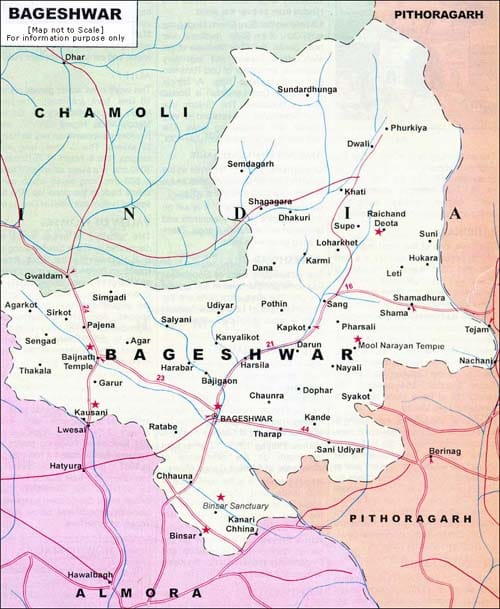

Woolen Blankets and Shawls – Bageshwar

🧣 Product Description
Bageshwar is renowned for its handwoven woolen blankets and shawls, crafted using traditional techniques passed down through generations. These products are made from high-quality sheep wool, sourced locally from the Himalayan region. The artisans of Bageshwar spin and weave the wool by hand, resulting in warm, durable, and beautiful textiles with intricate patterns. These shawls and blankets are not only functional in the cold Himalayan winters but also serve as cultural and artistic treasures.
📍 Origin, Speciality & Cultural Significance
The weaving tradition of Bageshwar is deeply rooted in Kumaoni culture. Families in remote villages engage in wool processing and loom work, especially during winter months. The specialty lies in the natural dyes and handcrafted patterns that reflect the heritage of the region. Woolen products from Bageshwar are highly valued during weddings and festivals, often gifted as a symbol of warmth and prosperity. Their eco-friendly production and traditional value make them both sustainable and significant.
📞 Contact & Purchase Info
For more information or orders, contact Himalayan Wool Weavers Cooperative at +919816261740 , +441279325773 or email
info@marichiworld.com , marichiworld@gmail.com.
You can also visit
🗺️ Bageshwar District Map

🎉 Fun Facts & History
- Bageshwar’s wool weaving is centuries old and reflects both Tibetan and Kumaoni influences.
- Natural plant-based dyes are still used to color the wool, maintaining sustainability.
- Traditional “Lohi” shawls from Bageshwar are a status symbol and often gifted to elders.
- The craft is being revived through government and NGO support to empower rural women artisans.